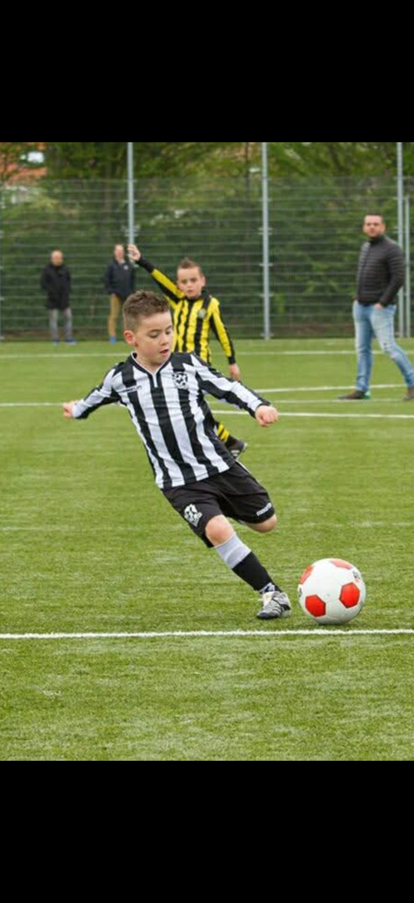
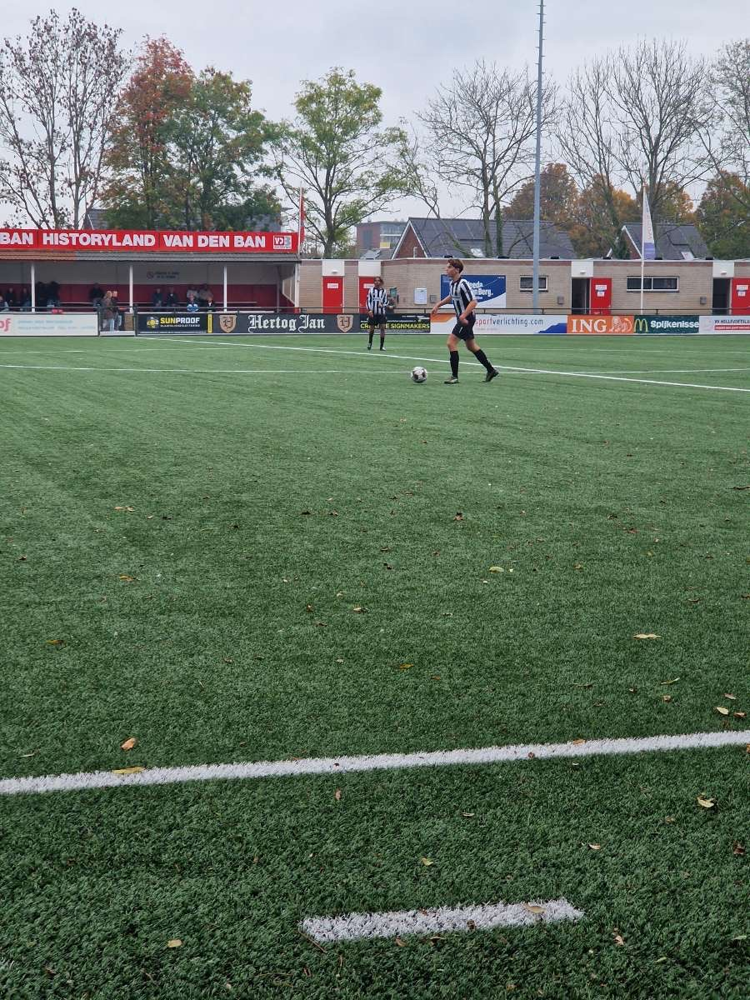
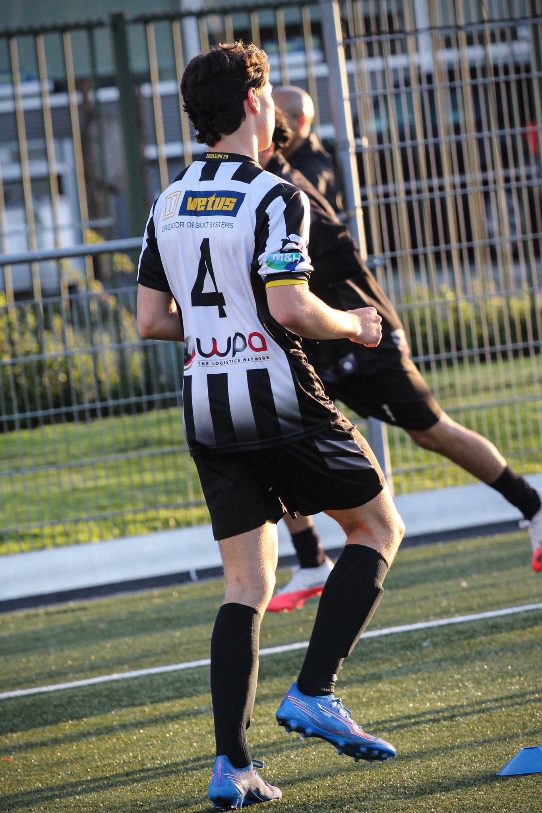
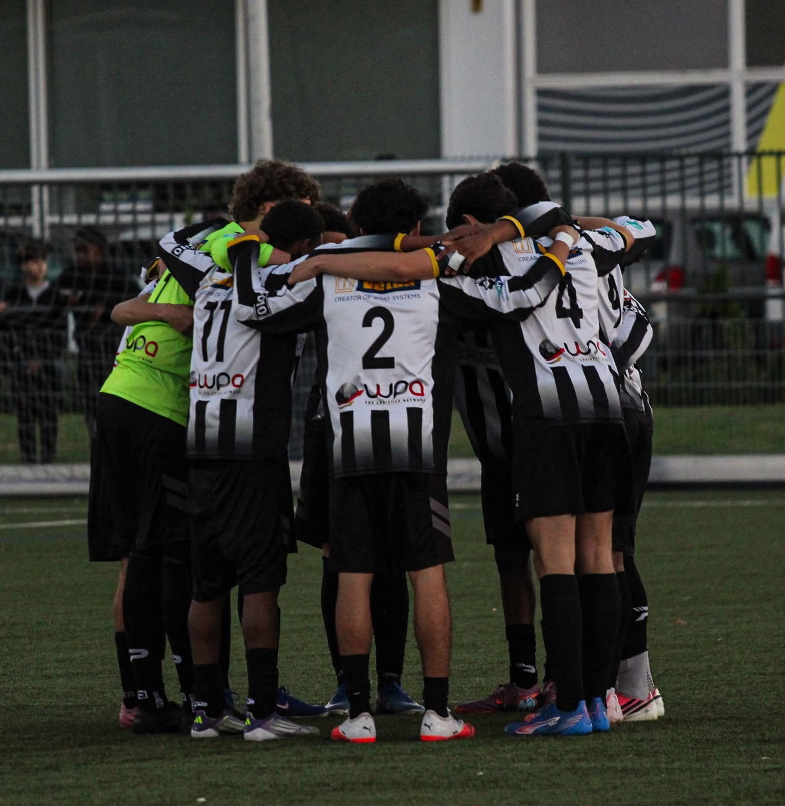

Voetbal
Mijn carrière
Mijn enige sport waar ik aan doe is voetbal. Voetbal betekent alles voor mij en is mijn passie. Ik begon met voetballen toen ik 4 jaar oud was. Ik speelde toen bij de voetbalclub Zwaluwen in Vlaardingen. Ik vond het superleuk en ik kwam altijd met een glimlach naar de training. Ik zat toen de tijd ook nog op kickboxen.
Later toen ik rond de 7 jaar was moest ik een keuze maken tussen kickboxen en voetbal. Ik koos voor voetbal omdat ik dat leuker vond, dus heb ik alles op voetbal gezet. Ik heb veel mensen leren kennen en zelf ook veel vrienden gemaakt. Na een tijdje toen ik 12 werd was ik één van de beste spelers van mijn team en werd ik doorgestuurd van de JO13-2 naar de JO13-1. Ik was superblij, totdat ik hoorde dat het team vol zat en ik niet over kon gaan. Ik was wel te goed voor om in de JO13-2 te blijven, dus besloot ik om 1 jaar over te slaan.
Ik kwam toen terecht bij de JO14-1. Ik vond het wel spannend omdat ik niet wist of ik het niveau aan kon. Ik had niet super veel speeltijd, maar kreeg vaak de kans om op linksback te spelen. Ik deed het goed, maar het team viel me tegen. Nadat ik hoorde dat iedereen naar andere clubs gaan, had ik geen team voor volgend seizoen. Ik besloot toen om op zoek te gaan naar een andere club. Ik kwam toen terecht bij de voetbalclub Excelsior'20 in Schiedam. Ik keek er naar uit om daar te gaan voetballen. Het team was leuk en de club zelf was ook leuk. Ik werd toen geplaatst in de JO14-1 en speelde als linker centrale verdediger.
Ik had mezelf bewezen en had elke wedstrijd volledig gespeeld. Ik had veel plezier en ik had het gevoel dat ik mezelf kon ontwikkelen. Ik had een goed seizoen en ik was blij met mijn prestaties. Ik ben blijven spelen op mijn positie tot de dag van vandaag. Doorgespoeld zit ik nu in de JO17-1 en ben ik één van de beste spelers van het team.



